Sonar
Execute os passos abaixo para configuração do Sonar
Criando a Instância
Para criar uma instância vá no painel EC2 na opção e escolha a opção:
Executar Instâncias
Os parâmetros usados serão:
Nome: sonar
Máquina SO: Ubuntu Server 22.04 LTS amd64
Máquina Type: T2 Small
Disco: 50GB
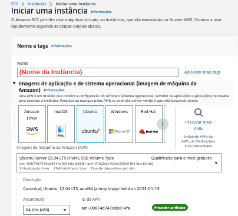
Instância
Logo em seguida aguarde a instância ficar disponível
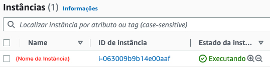
Criar IP Elástico
Agora precisamos criar um IP Elástico para acesso "Externo", acesse o menu
conforme a imagem abaixo, clique no menu depois em Alocar endereço IP elástico.
Dica: Quando alocar coloque o nome do ip elastico com o mesmo nome da instância criada para facilitar localização.
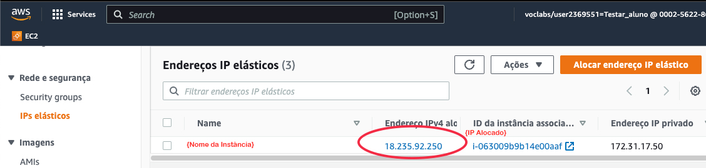
Associar IP Elástico
Precisamos associar esse IP a instância previamente criada, para isso então clique sobre o ip que acabou de criar,
então será apresentado uma tela com as informações do ip, clique em Associar endereço IP elástico.
Na nova tela, selecione Instância, então abaixo no campo selecione a instância previamente
criada, Depois clique em Associar
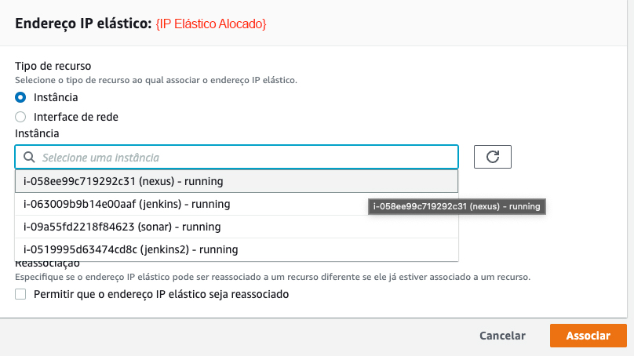
Regras de Segurança
Para acessar a Instância criada, precisamos liberar as entradas de porta então acesse o menu:
.
Aproveite e renomeie o nome do grupo de segurança para o nome da instância criada previamente e depois
selecione a regra, no menu superior Ações selecione:
 Nas regras de entrada vamos liberar todas as portas, mas em produção se atente em liberar apenas as portas
necessárias, mude o campo para conforme abaixo e clique em: Salvar Regras.
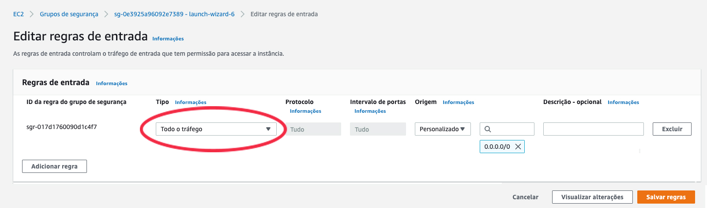
Nas regras de entrada vamos liberar todas as portas, mas em produção se atente em liberar apenas as portas
necessárias, mude o campo para conforme abaixo e clique em: Salvar Regras.
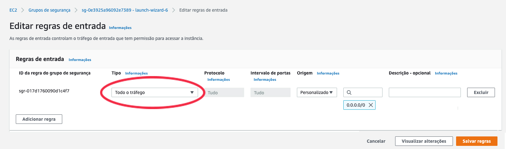
Nas regras de entrada vamos liberar todas as portas, mas em produção se atente em liberar apenas as portas
necessárias, mude o campo para conforme abaixo e clique em: Salvar Regras.
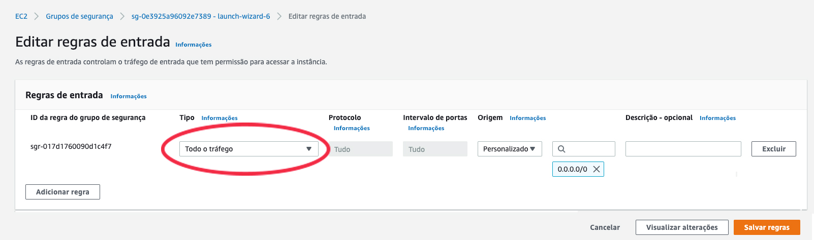
Acessando a instância
Caso você queira acessar o da máquina pelo browser, selecione a instância criada previamente clique em Conectar,
na nova tela informe o usuário , depois clique em: Conectar.
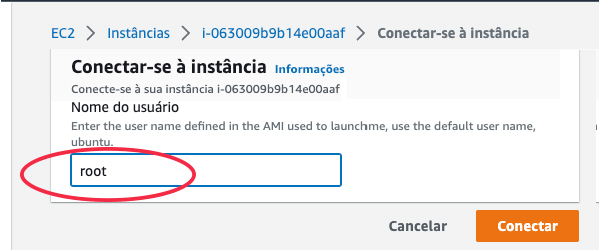
Caso queira poderá usar o ou um cliente SSH instalado local na sua estação.
Instalando o Sonar
#Configurando Limites
sysctl -w vm.max_map_count=524288
sysctl -w fs.file-max=131072
ulimit -n 131072
ulimit -u 8192
vim /etc/security/limits.conf
#no final do arquivo antes da linha #End of file adicione as linhas abaixo
sonarqube - nofile 65536
sonarqube - noproc 4096
#salve o arquivo
vim /etc/sysctl.conf
#no final do arquivo adiciona a linha abaixo
vm.max_map_count=262144
#Instalando Unzip
apt update
apt install wget unzip -y
#Instalando Java
apt install openjdk-11-jdk -y
java -version
#
#Instalando Postgres
sh -c 'echo "deb http://apt.postgresql.org/pub/repos/apt/ `lsb_release -cs`-pgdg main" >> /etc/apt/sources.list.d/pgdg.list'
wget -q https://www.postgresql.org/media/keys/ACCC4CF8.asc -O - | sudo apt-key add -
apt install -y postgresql postgresql-contrib
systemctl start postgresql
systemctl enable postgresql
#Criando usuario,banco e suas permissoes
sudo passwd postgres #informe a senha postgres , mas lembre em muda-la em ambiente produtivo
su - postgres
createuser sonar
psql
ALTER USER sonar WITH ENCRYPTED password 'sonar';
CREATE DATABASE sonarqube OWNER sonar;
grant all privileges on DATABASE sonarqube to sonar;
exit
exit
#Instalando o sonar
cd /tmp
sudo wget https://binaries.sonarsource.com/Distribution/sonarqube/sonarqube-8.9.9.56886.zip
unzip sonarqube-8.9.9.56886.zip -d /opt
mv /opt/sonarqube-8.9.9.56886 /opt/sonarqube
#Criando Grupo Sonar e adicionando o usuario sonar
groupadd sonar
useradd -c "user to run SonarQube" -d /opt/sonarqube -g sonar sonar
#Dando permissao a pasta /opt/sonarqube
chown sonar:sonar /opt/sonarqube -R
#Editando as configurações do Banco
vim /opt/sonarqube/conf/sonar.properties
# procure as linhas não esqueça de descomentar o #
#sonar.jdbc.username= e substitua por sonar.jdbc.username=sonar
#sonar.jdbc.password= e substitua por sonar.jdbc.password=sonar
#sonar.jdbc.url=jdbc:postgresql://localhost/sonarqube?currentSchema=my_schema e substitua por sonar.jdbc.url=jdbc:postgresql://localhost:5432/sonarqube
#Salve o arquivo
#Editando o arquivo e execução do Sonar
vim /opt/sonarqube/bin/linux-x86-64/sonar.sh
# procure a linha com #RUN_AS_USER= e substitua por RUN_AS_USER=sonar
#Salve o arquivo
#Executando o sonar
su sonar
cd /opt/sonarqube/bin/linux-x86-64/
./sonar.sh start
# deverá aparecer
Starting SonarQube
Starde SonarQube
#Verificando execução
./sonar.sh status
# deverá aparecer
SonarQube is running
./sonar.sh stop
exit
vim /etc/systemd/system/sonar.service
#preencha o arquivo com o conteúdo abaixo:
[Unit]
Description=SonarQube service
After=syslog.target network.target
[Service]
Type=forking
ExecStart=/opt/sonarqube/bin/linux-x86-64/sonar.sh start
ExecStop=/opt/sonarqube/bin/linux-x86-64/sonar.sh stop
User=sonar
Group=sonar
Restart=always
LimitNOFILE=65536
LimitNPROC=4096
[Install]
WantedBy=multi-user.target
#Iniciando o serviço
systemctl start sonar
systemctl enable sonar
systemctl status sonar
exit
Acessando a Instância do Sonarqube
Pelo IP Elastico da Instância acesse no seu browser o endereço:
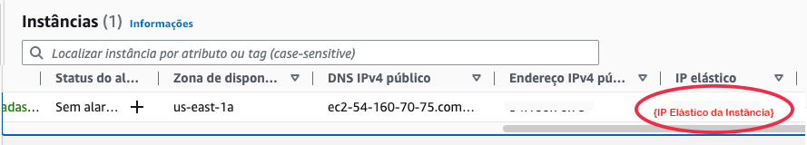
Então informe o usuario :
E a senha:
O sistema irá pedir pra trocar a senha, troque para (apenas para o exercício)
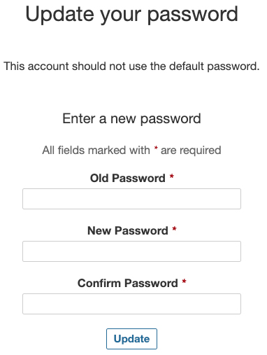
Criando Projeto Carros API
Precisamos criar o projeto da API que iremos usar, então clique na opção na tela inicial:
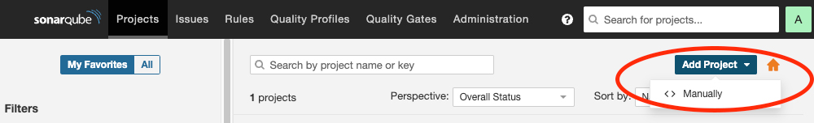
Informe os valores conforme abaixo na imagem e Clique em
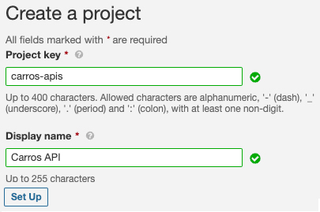
Logo em seguida iremos geram um token para esse projeto
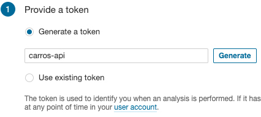
Copie o token gerado para ser usado posteriormente e clique em Continue
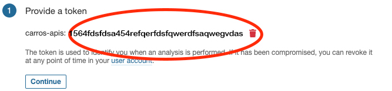
Clique no botão: Maven
O Sonar irá apresentar o comando para verificar o projetoVoce pode copiar o comando e guardar mas e opcional, mas iremos usa-lo de outra forma
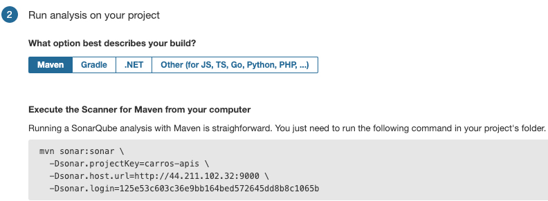
Finalizamos as configurações do Sonar.